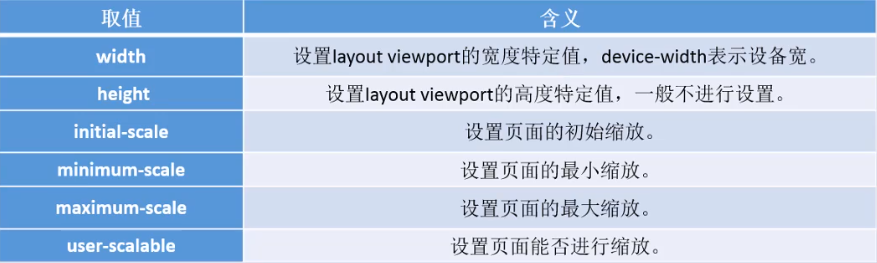
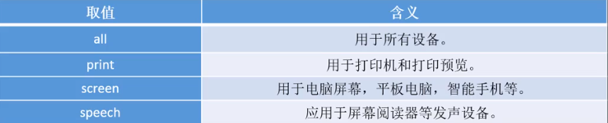

移动端响应式布局
Viewport视口
在移动端Viewport视口是浏览器显示页面内容的屏幕区域。在Viewport中有两种视口,分别表示为：visual viewport(可视视口)和layout viewport(布局视口)。
visual viewport固定大小跟屏幕大小相同,在上面。而layout viewport可改变大小,在下面。layout viewport默认大小为980像素,可通过document.documentElement.clientWidth获取。
网页需要将layout viewport设置成跟visual viewport等同大小,方便进行网页制作。
通过标签进行设置,name属性指定viewport值,content属性进行视口配置。

1 | <meta name="viewport" content="width=device-width, initial-scale=1.0, user-scalable=no"> |
移动端适配方案
1.百分比布局,也叫流式布局。
通过盒子的宽度设置成百分比来根据屏幕的宽度来进行伸缩，不受固定像素的限制，内容向两侧填充。
流式布局方式是移动web开发使用的比较常见的布局方式。
max-width 最大宽度(max-height最大高度)。
min-width最小宽度（min-height最小高度）。
2.等比缩放布局,也叫rem布局。
单位：
em : 是一个相对单位,1em等于当前元素或父元素的font-size值。
rem : 是一个相对单位,1rem等于根元素的font-size值。
vw / vh : 把屏幕分为100份,1vw等于屏幕宽的1%。
动态设置font-size(要给body重置一下font-size: 16px;)：
通过JS
1
2
3
4
<script>
var fontsize = document.documentElement.clientWidth / 3.75;
document.documentElement.style.fontSize = fontsize + "px";
</script>
通过VW
1
html{font-size: 26.666667vw;}
响应式布局
利用媒体查询,即media queries,可以针对不同媒体类型定义不同的样式,从而实现响应式布局。
媒体类型：

1 | @media all and(min-width: 500px) and (max-width:700px) {执行的CSS代码} |
本博客所有文章除特别声明外，均采用 CC BY-NC-SA 4.0 许可协议。转载请注明来自 Zhou的博客！
相关推荐